WHY MORPHOLOGY MATTERS
A neuron is more than a charge in an electric field
A computational neuron is built from many connected compartments representing the soma, dendrites, axon, branches, bends, and terminals. The voltage induced by TMS is therefore distributed across a complicated three dimensional structure rather than applied to one simple point.
Modern biophysical modeling indicates that direct activation by near threshold TMS is strongly influenced by axonal geometry. Bends, branches, changes in diameter, myelinated segments, and distal axonal structures can create sites that are especially sensitive to the applied electric field.
This means that two neurons exposed to the same macroscopic electric field magnitude may still have different firing thresholds if their morphologies or orientations are different.
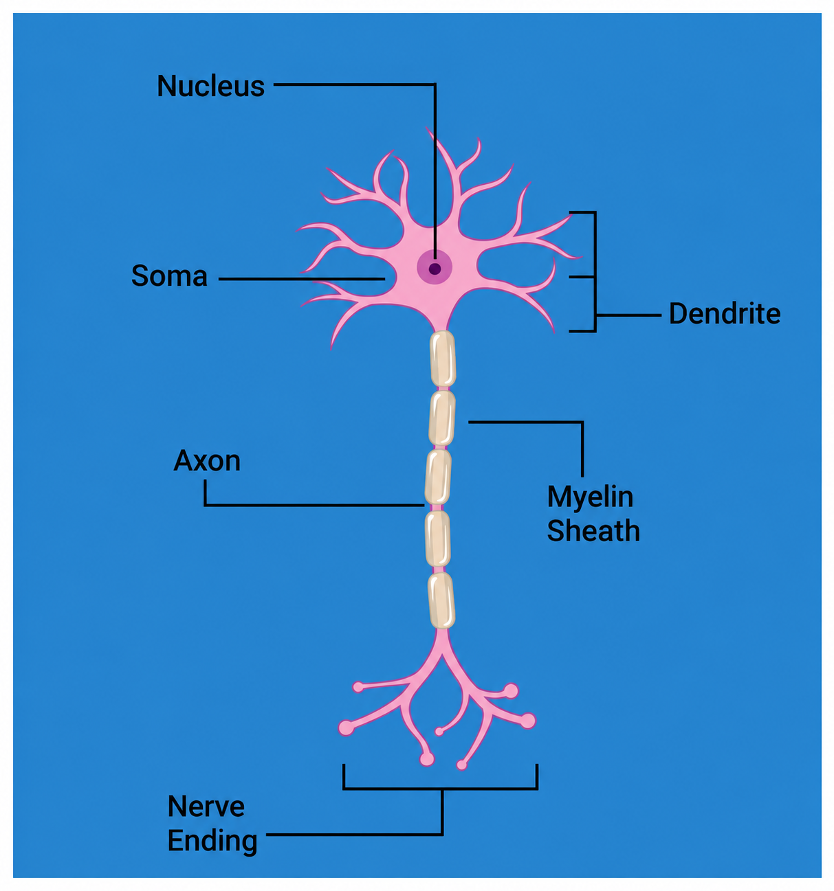
REFERENCE MODEL
Motor Cortex Layer 5 Pyramidal Neuron
Why layer 5 matters in M1
Layer 5 contains large pyramidal projection neurons with prominent apical dendrites and axons that can extend toward deeper structures and white matter. In the motor cortex, layer 5 output neurons are closely associated with the descending motor system, making them a natural cell class to include when studying the physiological effects underlying motor threshold measurements.
What TMS modeling tells us
Morphologically realistic TMS models have found layer 5 pyramidal cells to be highly sensitive to electric field direction and, in some model sets, among the lowest threshold cortical cell types. The exact ranking of L5 versus more superficial pyramidal cells is model dependent, which is itself evidence that morphology matters.
Role in our project
M1 L5 acts as a reference point: how much stimulation is required to activate a motor cortex pyramidal neuron under a given waveform, pulse width, and orientation? That result can then be compared with the same or different cell classes placed in the DLPFC.
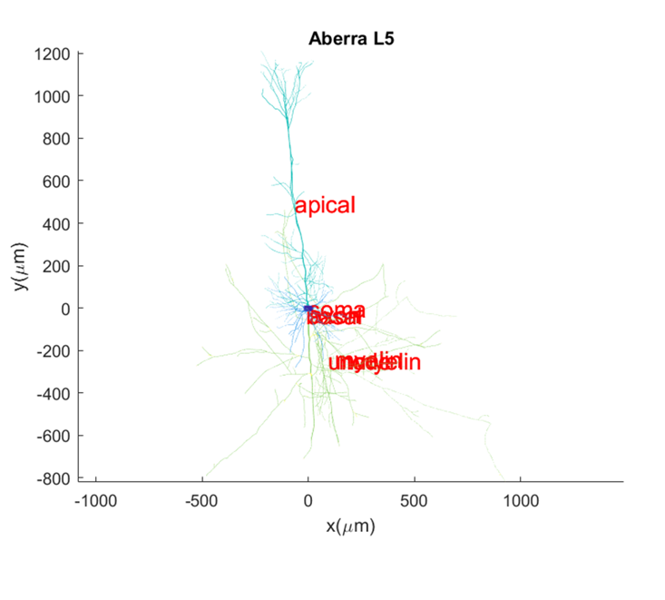
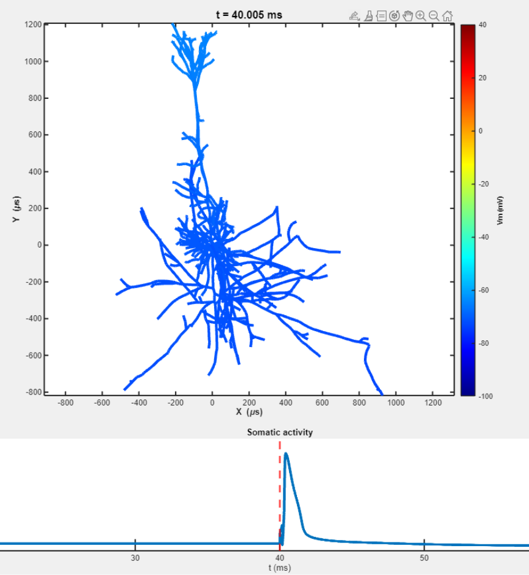
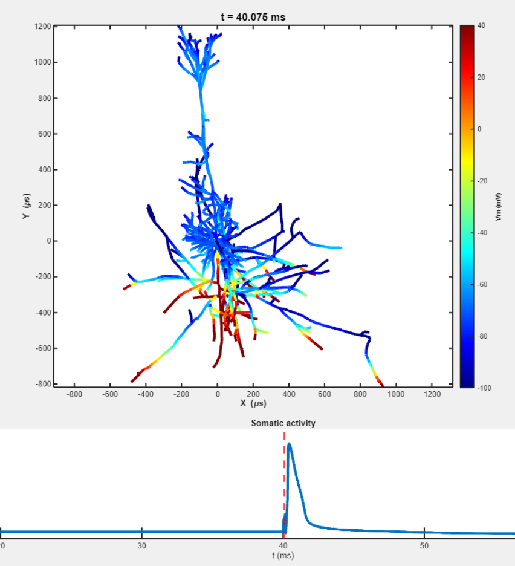
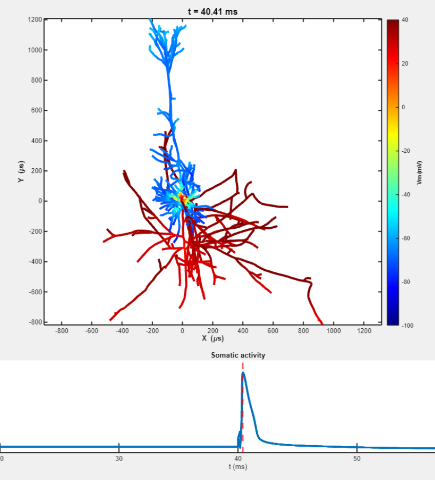
REGION COMPARISON
DLPFC Layer 5 Pyramidal Neuron
Same broad cell class, different environment
A DLPFC L5 model gives us a useful comparison with M1 L5. Even when a similar neuronal morphology is used, the local cortical geometry, coil to cortex relationship, and electric field orientation are different in the DLPFC.
Why location can change threshold
Multi scale modeling has shown that identical stimulation settings can create different field strengths and different neuronal activation thresholds in M1 and the DLPFC. Therefore, changing the target region alone can change how efficiently a neuron is recruited.
Role in our project
This model helps answer a controlled question: if we keep the neuron broadly comparable but move from the motor cortex to the treatment region, how much of the threshold difference is produced by the region and electric field rather than by changing neuronal layer?
The L5 morphology can be placed in a different modeled cortical region. Changing the surrounding field while keeping the cell model comparable helps separate regional effects from morphology effects.
PRIMARY MORPHOLOGY FOCUS
DLPFC Layer 2/3 Pyramidal Neuron
Layer 2/3 pyramidal neurons are especially interesting for this project because they occupy more superficial cortical layers and participate heavily in corticocortical communication. In the DLPFC, these neurons help connect prefrontal circuits with other cortical regions, making them relevant both to TMS physics and to the distributed networks involved in depression.
Closer to the applied field
TMS induced electric fields are generally strongest near the cortical surface and decrease with distance and tissue geometry. Because L2/3 neurons are more superficial than L5 neurons, they occupy a region where direct cortical stimulation is especially relevant.
A complex arbor gives the field many possible targets
L2/3 pyramidal neurons contain branching intracortical axons whose terminals extend in multiple directions. Realistic simulations show that these branches and distal axonal structures can create low threshold activation sites when appropriately aligned with the electric field.
Changing coil angle changes the neuron field relationship
Rotating the TMS coil changes the direction of the induced cortical electric field. A different field direction can align with a different axonal branch, bend, or terminal. That provides a cellular explanation for why firing threshold can oscillate as coil orientation is swept through different angles.
Layer III is also biologically interesting in the DLPFC
Postmortem studies of DLPFC Brodmann area 46 have reported changes involving layer III pyramidal neurons in major depressive disorder, including differences in pyramidal cell number or morphology in some cohorts. These findings do not mean that one cell type explains depression, but they add biological motivation for examining superficial DLPFC pyramidal neurons.
WHY THIS MODEL GETS EXTRA ATTENTION
DLPFC L2/3 sits at the intersection of accessibility, anatomy, and stimulation efficiency
It is located relatively close to the cortical surface, has an axonal structure capable of strong directional interactions with the TMS field, contributes to the corticocortical networks that make the DLPFC important, and provides a meaningful contrast with the deeper L5 model. For those reasons, DLPFC L2/3 is a particularly useful model for asking whether stimulation parameters can be tuned to reduce the required firing threshold.
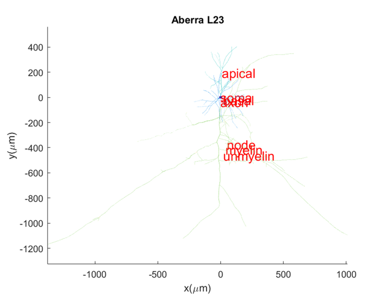
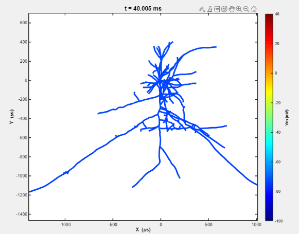
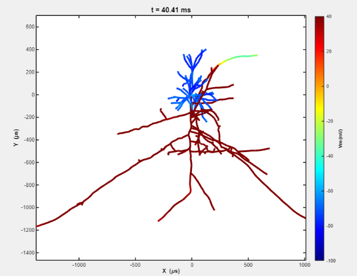
FROM MORPHOLOGY TO LOWER THRESHOLD
How morphology can guide more efficient stimulation
The neuron itself is not being redesigned. Instead, the simulation lets us search for stimulation conditions that take advantage of the neuron's existing geometry. If a particular combination of field direction and pulse timing drives a sensitive axonal site more effectively, the model may fire at a lower applied stimulation intensity.
Point the field in a more effective direction
Rotating the coil changes which neuronal branches are best aligned with the electric field. This is why morphology and coil angle cannot be considered independently.
Change how long the membrane is driven
Neuronal compartments have finite membrane time constants. Changing pulse width changes the duration of polarization and therefore the stimulation amplitude required to reach threshold.
Do not assume one threshold applies to every layer
L2/3 and L5 pyramidal neurons have different axonal and dendritic structures, so the parameter set that is efficient for one cell may not be optimal for another.
The same neuron can behave differently in a different field
Moving from M1 to DLPFC changes cortical shape, depth, and field orientation. Therefore, the region and the morphology have to be considered together.
WHAT THE PARAMETER SWEEPS LOOK LIKE
Electric Field Alignment Helps Explain Coil Orientation Sensitivity
Coil orientation changes the direction of the induced electric field relative to neuronal geometry. This conceptual relationship helps explain why some orientations produce lower firing thresholds than others. After selecting an efficient coil orientation, pulse width sweeps show how the required field changes with stimulation duration.
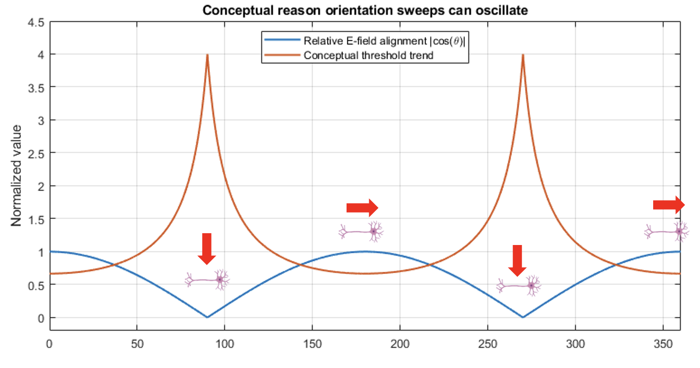
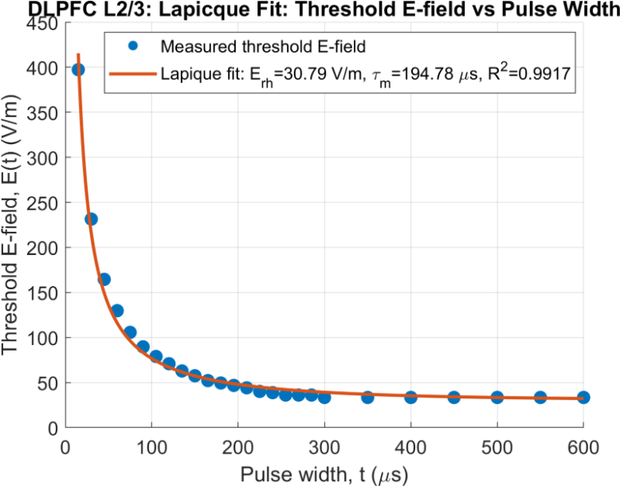
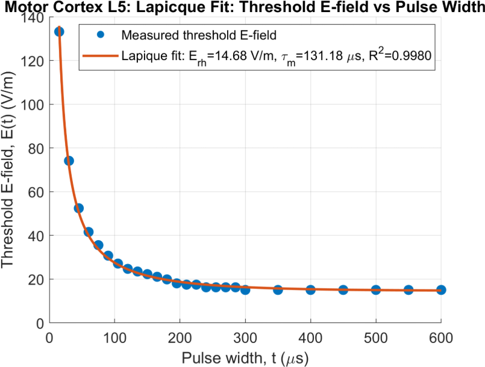
DATA BACKED CONCLUSION
Neural Scale Optimization Can Lower Firing Thresholds
Yes. Neural scale simulation can identify TMS parameters that require substantially lower dI/dt to fire DLPFC L2/3 neurons. Coil orientation, pulse width, and pulse shape each changed the firing threshold in our results. This means stimulation parameters can be selected based on how efficiently they interact with the neuron rather than assuming that one setting is optimal for every condition.
At 150 µs, choosing the best coil orientation instead of the least efficient tested orientation reduced the DLPFC L2/3 firing threshold by 45.6% for rectangular pulses, 48.4% for monophasic pulses, and 31.0% for biphasic pulses.
Across the available 15 to 600 µs pulse width sweep, the DLPFC L2/3 threshold decreased from 297 to 15 for rectangular, 533 to 19 for monophasic, and 989 to 25 for biphasic stimulation.
At 150 µs and each pulse shape's optimized coil orientation, the DLPFC L2/3 firing thresholds were 43 for rectangular, 47 for monophasic, and 87 for biphasic stimulation. The rectangular threshold was about 50.6% lower than the biphasic threshold.
The neuronal firing threshold is not fixed. By analyzing stimulation at the neural scale, we can identify combinations of coil orientation, pulse width, and pulse shape that reduce the dI/dt required to trigger an action potential. This gives the project a direct method for finding more efficient stimulation conditions at the neuronal level.
These results describe the dI/dt required to reach neuronal firing threshold. They do not by themselves measure total device energy or real world power cost.